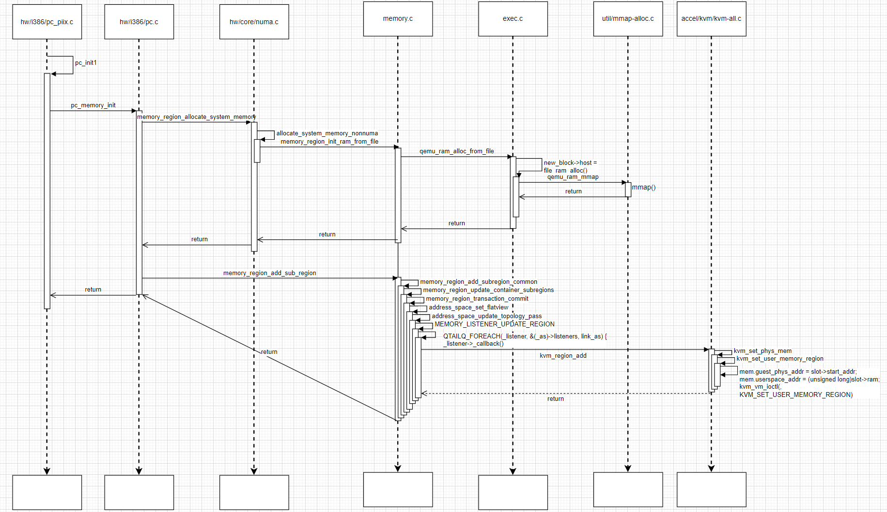
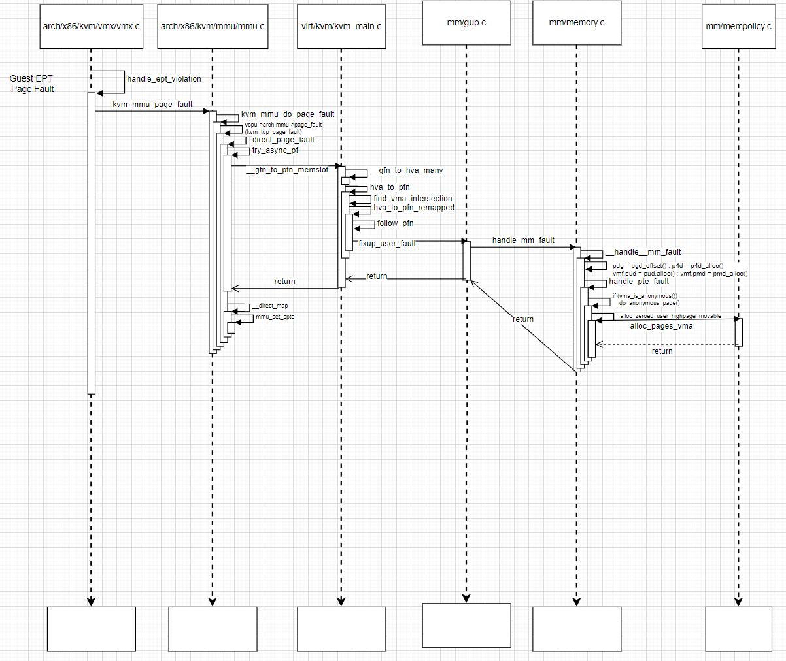

How Qemu/KVM manage VM memory: Part1 system ram
1. Introduction
This article summarizes init and runtime for system ram
2. Prerequesities
QEMU 4.1.1
Kernel 5.11
3. system ram alloc
3.1 qemu alloc ram by mmap() syscall
memory is allocated when machine init:
71 /* PC hardware initialisation */
72 static void pc_init1(MachineState *machine,
73 const char *host_type, const char *pci_type)
74 {
...
181
182 /* allocate ram and load rom/bios */
183 if (!xen_enabled()) {
184 pc_memory_init(pcms, system_memory,
185 rom_memory, &ram_memory);
186 } else if (machine->kernel_filename != NULL) {
...
hw/i386/pc_piix.c
1806 void pc_memory_init(PCMachineState *pcms,
1807 MemoryRegion *system_memory,
1808 MemoryRegion *rom_memory,
1809 MemoryRegion **ram_memory)
1810 {
1811 int linux_boot, i;
1812 MemoryRegion *ram, *option_rom_mr;
1813 MemoryRegion *ram_below_4g, *ram_above_4g;
...
1823 /* Allocate RAM. We allocate it as a single memory region and use
1824 * aliases to address portions of it, mostly for backwards compatibility
1825 * with older qemus that used qemu_ram_alloc().
1826 */
1827 ram = g_malloc(sizeof(*ram));
1828 memory_region_allocate_system_memory(ram, NULL, "pc.ram",
1829 machine->ram_size);
1830 *ram_memory = ram;
hw/i386/pc.c
502 void memory_region_allocate_system_memory(MemoryRegion *mr, Object *owner,
503 const char *name,
504 uint64_t ram_size)
505 {
506 uint64_t addr = 0;
507 int i;
508
509 if (nb_numa_nodes == 0 || !have_memdevs) {
510 allocate_system_memory_nonnuma(mr, owner, name, ram_size);
511 return;
512 }
hw/core/numa.c
468 static void allocate_system_memory_nonnuma(MemoryRegion *mr, Object *owner,
469 const char *name,
470 uint64_t ram_size)
471 {
472 if (mem_path) {
473 #ifdef __linux__
474 Error *err = NULL;
475 memory_region_init_ram_from_file(mr, owner, name, ram_size, 0, 0,
476 mem_path, &err);
477 if (err) {
hw/core/numa.c
1585 #ifdef CONFIG_POSIX
1586 void memory_region_init_ram_from_file(MemoryRegion *mr,
1587 struct Object *owner,
1588 const char *name,
1589 uint64_t size,
1590 uint64_t align,
1591 uint32_t ram_flags,
1592 const char *path,
1593 Error **errp)
1594 {
1595 Error *err = NULL;
1596 memory_region_init(mr, owner, name, size);
1597 mr->ram = true;
1598 mr->terminates = true;
1599 mr->destructor = memory_region_destructor_ram;
1600 mr->align = align;
1601 mr->ram_block = qemu_ram_alloc_from_file(size, mr, ram_flags, path, &err);
memory.c
2390 RAMBlock *qemu_ram_alloc_from_file(ram_addr_t size, MemoryRegion *mr,
2391 uint32_t ram_flags, const char *mem_path,
2392 Error **errp)
2393 {
2394 int fd;
2395 bool created;
2396 RAMBlock *block;
2397
2398 fd = file_ram_open(mem_path, memory_region_name(mr), &created, errp);
2399 if (fd < 0) {
2400 return NULL;
2401 }
2402
2403 block = qemu_ram_alloc_from_fd(size, mr, ram_flags, fd, errp);
exec.c
2326 RAMBlock *qemu_ram_alloc_from_fd(ram_addr_t size, MemoryRegion *mr,
2327 uint32_t ram_flags, int fd,
2328 Error **errp)
2329 {
...
2368 new_block = g_malloc0(sizeof(*new_block));
2369 new_block->mr = mr;
2370 new_block->used_length = size;
2371 new_block->max_length = size;
2372 new_block->flags = ram_flags;
2373 new_block->host = file_ram_alloc(new_block, size, fd, !file_size, errp);
...
exec.c
1884 static void *file_ram_alloc(RAMBlock *block,
1885 ram_addr_t memory,
1886 int fd,
1887 bool truncate,
1888 Error **errp)
1889 {
...
1938 area = qemu_ram_mmap(fd, memory, block->mr->align,
1939 block->flags & RAM_SHARED, block->flags & RAM_PMEM);
1940 if (area == MAP_FAILED) {
exec.c
85 void *qemu_ram_mmap(int fd,
86 size_t size,
87 size_t align,
88 bool shared,
89 bool is_pmem)
90 {
...
149 ptr = mmap(guardptr + offset, size, PROT_READ | PROT_WRITE,
150 flags | map_sync_flags, fd, 0);
util/mmap-alloc.c
3.2 qemu give the host VA and Guest PA to KVM by KVM ioctl
After allocating host memory by memory_region_allocate_system_memory() successfully, qemu will add it into system_memory as subregion, which is actually telling KVM the Host userspace address and Guest physical address.
1806 void pc_memory_init(PCMachineState *pcms,
1807 MemoryRegion *system_memory,
1808 MemoryRegion *rom_memory,
1809 MemoryRegion **ram_memory)
1810 {
...
1827 ram = g_malloc(sizeof(*ram));
1828 memory_region_allocate_system_memory(ram, NULL, "pc.ram",
1829 machine->ram_size);
1830 *ram_memory = ram;
1831 ram_below_4g = g_malloc(sizeof(*ram_below_4g));
1832 memory_region_init_alias(ram_below_4g, NULL, "ram-below-4g", ram,
1833 0, pcms->below_4g_mem_size);
Add the aliase as the subregion
1834 memory_region_add_subregion(system_memory, 0, ram_below_4g);
1835 e820_add_entry(0, pcms->below_4g_mem_size, E820_RAM);
hw/i386/pc.c
2423 void memory_region_add_subregion(MemoryRegion *mr,
2424 hwaddr offset,
2425 MemoryRegion *subregion)
2426 {
2427 subregion->priority = 0;
2428 memory_region_add_subregion_common(mr, offset, subregion);
2429 }
...
2413 static void memory_region_add_subregion_common(MemoryRegion *mr,
2414 hwaddr offset,
2415 MemoryRegion *subregion)
2416 {
2417 assert(!subregion->container);
2418 subregion->container = mr;
2419 subregion->addr = offset;
2420 memory_region_update_container_subregions(subregion);
2421 }
2422
...
2393 static void memory_region_update_container_subregions(MemoryRegion *subregion)
2394 {
2395 MemoryRegion *mr = subregion->container;
2396 MemoryRegion *other;
2397
2398 memory_region_transaction_begin();
2399
2400 memory_region_ref(subregion);
2401 QTAILQ_FOREACH(other, &mr->subregions, subregions_link) {
2402 if (subregion->priority >= other->priority) {
2403 QTAILQ_INSERT_BEFORE(other, subregion, subregions_link);
2404 goto done;
2405 }
2406 }
2407 QTAILQ_INSERT_TAIL(&mr->subregions, subregion, subregions_link);
2408 done:
2409 memory_region_update_pending |= mr->enabled && subregion->enabled;
2410 memory_region_transaction_commit();
2411 }
memory.c
1074 void memory_region_transaction_commit(void)
1075 {
1076 AddressSpace *as;
1077
1078 assert(memory_region_transaction_depth);
1079 assert(qemu_mutex_iothread_locked());
1080
1081 --memory_region_transaction_depth;
1082 if (!memory_region_transaction_depth) {
1083 if (memory_region_update_pending) {
1084 flatviews_reset();
1085
1086 MEMORY_LISTENER_CALL_GLOBAL(begin, Forward);
1087
1088 QTAILQ_FOREACH(as, &address_spaces, address_spaces_link) {
1089 address_space_set_flatview(as);
...
1012 static void address_space_set_flatview(AddressSpace *as)
1013 {
1014 FlatView *old_view = address_space_to_flatview(as);
...
1036 address_space_update_topology_pass(as, old_view2, new_view, false);
...
memory.c
Below is the key function to add/del memory region:
901 static void address_space_update_topology_pass(AddressSpace *as,
902 const FlatView *old_view,
903 const FlatView *new_view,
904 bool adding)
905 {
906 unsigned iold, inew;
...
925 if (frold
926 && (!frnew
927 || int128_lt(frold->addr.start, frnew->addr.start)
928 || (int128_eq(frold->addr.start, frnew->addr.start)
929 && !flatrange_equal(frold, frnew)))) {
930 /* In old but not in new, or in both but attributes changed. */
931
932 if (!adding) {
933 flat_range_coalesced_io_del(frold, as);
934 MEMORY_LISTENER_UPDATE_REGION(frold, as, Reverse, region_del);
935 }
936
937 ++iold;
938 } else if (frold && frnew && flatrange_equal(frold, frnew)) {
939 /* In both and unchanged (except logging may have changed) */
940
941 if (adding) {
942 MEMORY_LISTENER_UPDATE_REGION(frnew, as, Forward, region_nop);
943 if (frnew->dirty_log_mask & ~frold->dirty_log_mask) {
944 MEMORY_LISTENER_UPDATE_REGION(frnew, as, Forward, log_start,
945 frold->dirty_log_mask,
946 frnew->dirty_log_mask);
947 }
948 if (frold->dirty_log_mask & ~frnew->dirty_log_mask) {
949 MEMORY_LISTENER_UPDATE_REGION(frnew, as, Reverse, log_stop,
950 frold->dirty_log_mask,
951 frnew->dirty_log_mask);
952 }
953 }
954
955 ++iold;
956 ++inew;
957 } else {
958 /* In new */
959
960 if (adding) {
961 MEMORY_LISTENER_UPDATE_REGION(frnew, as, Forward, region_add);
962 flat_range_coalesced_io_add(frnew, as);
memory.c
Qemu will iterate all the memory listener to do add/del
130 #define MEMORY_LISTENER_CALL(_as, _callback, _direction, _section, _args...) \
131 do { \
132 MemoryListener *_listener; \
133 \
134 switch (_direction) { \
135 case Forward: \
136 QTAILQ_FOREACH(_listener, &(_as)->listeners, link_as) { \
137 if (_listener->_callback) { \
138 _listener->_callback(_listener, _section, ##_args); \
139 } \
140 } \
141 break; \
142 case Reverse: \
143 QTAILQ_FOREACH_REVERSE(_listener, &(_as)->listeners, link_as) { \
144 if (_listener->_callback) { \
145 _listener->_callback(_listener, _section, ##_args); \
146 } \
147 } \
148 break; \
149 default: \
150 abort(); \
151 } \
152 } while (0)
153
154 /* No need to ref/unref .mr, the FlatRange keeps it alive. */
155 #define MEMORY_LISTENER_UPDATE_REGION(fr, as, dir, callback, _args...) \
156 do { \
157 MemoryRegionSection mrs = section_from_flat_range(fr, \
158 address_space_to_flatview(as)); \
159 MEMORY_LISTENER_CALL(as, callback, dir, &mrs, ##_args); \
160 } while(0)
161
memory.c
Since KVM memory listener has been registered before, so the kvm callback is executed:
1152 void kvm_memory_listener_register(KVMState *s, KVMMemoryListener *kml,
1153 AddressSpace *as, int as_id)
1154 {
1155 int i;
1156
1157 qemu_mutex_init(&kml->slots_lock);
1158 kml->slots = g_malloc0(s->nr_slots * sizeof(KVMSlot));
1159 kml->as_id = as_id;
1160
1161 for (i = 0; i < s->nr_slots; i++) {
1162 kml->slots[i].slot = i;
1163 }
1164
1165 kml->listener.region_add = kvm_region_add;
1166 kml->listener.region_del = kvm_region_del;
1167 kml->listener.log_start = kvm_log_start;
1168 kml->listener.log_stop = kvm_log_stop;
1169 kml->listener.log_sync = kvm_log_sync;
1170 kml->listener.log_clear = kvm_log_clear;
1171 kml->listener.priority = 10;
1172
1173 memory_listener_register(&kml->listener, as);
1174
1175 for (i = 0; i < s->nr_as; ++i) {
1176 if (!s->as[i].as) {
1177 s->as[i].as = as;
1178 s->as[i].ml = kml;
1179 break;
1180 }
1181 }
1182 }
...
1031 static void kvm_region_add(MemoryListener *listener,
1032 MemoryRegionSection *section)
1033 {
1034 KVMMemoryListener *kml = container_of(listener, KVMMemoryListener, listener);
1035
1036 memory_region_ref(section->mr);
1037 kvm_set_phys_mem(kml, section, true);
1038 }
...
accel/kvm/kvm-all.c
959 static void kvm_set_phys_mem(KVMMemoryListener *kml,
960 MemoryRegionSection *section, bool add)
961 {
962 KVMSlot *mem;
963 int err;
964 MemoryRegion *mr = section->mr;
965 bool writeable = !mr->readonly && !mr->rom_device;
966 hwaddr start_addr, size;
...
990 if (!add) {
991 mem = kvm_lookup_matching_slot(kml, start_addr, size);
992 if (!mem) {
993 goto out;
994 }
995 if (mem->flags & KVM_MEM_LOG_DIRTY_PAGES) {
996 kvm_physical_sync_dirty_bitmap(kml, section);
997 }
998
999 /* unregister the slot */
1000 g_free(mem->dirty_bmap);
1001 mem->dirty_bmap = NULL;
1002 mem->memory_size = 0;
1003 mem->flags = 0;
1004 err = kvm_set_user_memory_region(kml, mem, false);
1005 if (err) {
1006 fprintf(stderr, "%s: error unregistering slot: %s\n",
1007 __func__, strerror(-err));
1008 abort();
1009 }
1010 goto out;
1011 }
1012
1013 /* register the new slot */
1014 mem = kvm_alloc_slot(kml);
1015 mem->memory_size = size;
1016 mem->start_addr = start_addr;
1017 mem->ram = ram;
1018 mem->flags = kvm_mem_flags(mr);
1019
1020 err = kvm_set_user_memory_region(kml, mem, true);
1021 if (err) {
1022 fprintf(stderr, "%s: error registering slot: %s\n", __func__,
1023 strerror(-err));
1024 abort();
1025 }
accel/kvm/kvm-all.c
Below is the real KVM ioctl
283 static int kvm_set_user_memory_region(KVMMemoryListener *kml, KVMSlot *slot, bool new)
284 {
285 KVMState *s = kvm_state;
286 struct kvm_userspace_memory_region mem;
287 int ret;
288
289 mem.slot = slot->slot | (kml->as_id << 16);
290 mem.guest_phys_addr = slot->start_addr;
291 mem.userspace_addr = (unsigned long)slot->ram;
292 mem.flags = slot->flags;
293
294 if (slot->memory_size && !new && (mem.flags ^ slot->old_flags) & KVM_MEM_READONLY) {
295 /* Set the slot size to 0 before setting the slot to the desired
296 * value. This is needed based on KVM commit 75d61fbc. */
297 mem.memory_size = 0;
298 kvm_vm_ioctl(s, KVM_SET_USER_MEMORY_REGION, &mem);
299 }
300 mem.memory_size = slot->memory_size;
301 ret = kvm_vm_ioctl(s, KVM_SET_USER_MEMORY_REGION, &mem);
302 slot->old_flags = mem.flags;
303 trace_kvm_set_user_memory(mem.slot, mem.flags, mem.guest_phys_addr,
304 mem.memory_size, mem.userspace_addr, ret);
305 return ret;
306 }
accel/kvm/kvm-all.c

4. system ram runtime page table setup
When the ram is commited to KVM, the page table is not setup and the real page frame is not allocated. Page table will only be setup when needed, this is called on-demand paging. So when Guest OS is trying to access some page table which is not setup yet. EPT violation/misconfiguration will be triggered and kernel will try to fix it if possible.
Note that, this EPT violation/misconfiguration is only valid for the CPU enable paging. because VT-x requires the VMX non-root code to run with paging enabled, which precludes hardware virtualization of real-mode code and non-paged protected-mode software. For virtualizaion udner real-mode, virtual 8086 mode is used for Intel platform.
5284 static int handle_ept_violation(struct kvm_vcpu *vcpu)
5285 {
5286 ▸ unsigned long exit_qualification;
5287 ▸ gpa_t gpa;
...
5337 ▸ return kvm_mmu_page_fault(vcpu, gpa, error_code, NULL, 0);
5338 }
arch/x86/kvm/vmx/vmx.c
5057 int kvm_mmu_page_fault(struct kvm_vcpu *vcpu, gpa_t cr2_or_gpa, u64 error_code,
5058 ▸ ▸ void *insn, int insn_len)
5059 {
5060 ▸ int r, emulation_type = EMULTYPE_PF;
5061 ▸ bool direct = vcpu->arch.mmu->direct_map;
5062
5063 ▸ if (WARN_ON(!VALID_PAGE(vcpu->arch.mmu->root_hpa)))
5064 ▸ ▸ return RET_PF_RETRY;
5065
5066 ▸ r = RET_PF_INVALID;
5067 ▸ if (unlikely(error_code & PFERR_RSVD_MASK)) {
5068 ▸ ▸ r = handle_mmio_page_fault(vcpu, cr2_or_gpa, direct);
5069 ▸ ▸ if (r == RET_PF_EMULATE)
5070 ▸ ▸ ▸ goto emulate;
5071 ▸ }
5072
5073 ▸ if (r == RET_PF_INVALID) {
5074 ▸ ▸ r = kvm_mmu_do_page_fault(vcpu, cr2_or_gpa,
5075 ▸ ▸ ▸ ▸ ▸ lower_32_bits(error_code), false);
5076 ▸ ▸ if (WARN_ON_ONCE(r == RET_PF_INVALID))
5077 ▸ ▸ ▸ return -EIO;
5078 ▸ }
arch/x86/kvm/mmu/mmu.c
112 static inline int kvm_mmu_do_page_fault(struct kvm_vcpu *vcpu, gpa_t cr2_or_gpa,
113 ▸ ▸ ▸ ▸ ▸ u32 err, bool prefault)
114 {
115 #ifdef CONFIG_RETPOLINE
116 ▸ if (likely(vcpu->arch.mmu->page_fault == kvm_tdp_page_fault))
117 ▸ ▸ return kvm_tdp_page_fault(vcpu, cr2_or_gpa, err, prefault);
118 #endif
119 ▸ return vcpu->arch.mmu->page_fault(vcpu, cr2_or_gpa, err, prefault);
120 }
arch/x86/kvm/mmu.h
4496 static void init_kvm_tdp_mmu(struct kvm_vcpu *vcpu)
4497 {
4498 ▸ struct kvm_mmu *context = &vcpu->arch.root_mmu;
4499 ▸ union kvm_mmu_role new_role =
4500 ▸ ▸ kvm_calc_tdp_mmu_root_page_role(vcpu, false);
4501
4502 ▸ if (new_role.as_u64 == context->mmu_role.as_u64)
4503 ▸ ▸ return;
4504
4505 ▸ context->mmu_role.as_u64 = new_role.as_u64;
4506 ▸ context->page_fault = kvm_tdp_page_fault;
4507 ▸ context->sync_page = nonpaging_sync_page;
...
3790 int kvm_tdp_page_fault(struct kvm_vcpu *vcpu, gpa_t gpa, u32 error_code,
3791 ▸ ▸ bool prefault)
3792 {
3793 ▸ int max_level;
...
3804
3805 ▸ return direct_page_fault(vcpu, gpa, error_code, prefault,
3806 ▸ ▸ ▸ ▸ max_level, true);
3807 }
arch/x86/kvm/mmu/mmu.c
3693 static int direct_page_fault(struct kvm_vcpu *vcpu, gpa_t gpa, u32 error_code,
3694 ▸ ▸ ▸ bool prefault, int max_level, bool is_tdp)
3695 {
3696 ▸ bool write = error_code & PFERR_WRITE_MASK;
3697 ▸ bool map_writable;
...
3720 ▸ if (try_async_pf(vcpu, prefault, gfn, gpa, &pfn, write, &map_writable))
3721 ▸ ▸ return RET_PF_RETRY;
...
/* comments: once we get the pfn, just call mapping function to build the EPT page table*/
3734 ▸ if (is_tdp_mmu_root(vcpu->kvm, vcpu->arch.mmu->root_hpa))
3735 ▸ ▸ r = kvm_tdp_mmu_map(vcpu, gpa, error_code, map_writable, max_level,
3736 ▸ ▸ ▸ ▸ pfn, prefault);
3737 ▸ else
3738 ▸ ▸ r = __direct_map(vcpu, gpa, error_code, map_writable, max_level, pfn,
3739 ▸ ▸ ▸ ▸ prefault, is_tdp);
arch/x86/kvm/mmu/mmu.c
try_async_pf() is trying to get the gpa mapped HPA(pfn):
if it is already mapped, then just fetch it. If it is not mapped, then build this mapping.
3660 static bool try_async_pf(struct kvm_vcpu *vcpu, bool prefault, gfn_t gfn,
3661 ▸ ▸ ▸ gpa_t cr2_or_gpa, kvm_pfn_t *pfn, bool write,
3662 ▸ ▸ ▸ bool *writable)
3663 {
...
3673
3674 ▸ async = false;
3675 ▸ *pfn = __gfn_to_pfn_memslot(slot, gfn, false, &async, write, writable);
3676 ▸ if (!async)
3677 ▸ ▸ return false; /* *pfn has correct page already */
3678
...
3689 ▸ *pfn = __gfn_to_pfn_memslot(slot, gfn, false, NULL, write, writable);
3690 ▸ return false;
3691 }
arch/x86/kvm/mmu/mmu.c
give gfn and return pfn
2012 kvm_pfn_t __gfn_to_pfn_memslot(struct kvm_memory_slot *slot, gfn_t gfn,
2013 ▸ ▸ ▸ bool atomic, bool *async, bool write_fault,
2014 ▸ ▸ ▸ bool *writable)
2015 {
2016 ▸ unsigned long addr = __gfn_to_hva_many(slot, gfn, NULL, write_fault);
...
2036 ▸ return hva_to_pfn(addr, atomic, async, write_fault,
2037 ▸ ▸ ▸ writable);
2038 }
...
1741 static unsigned long __gfn_to_hva_many(struct kvm_memory_slot *slot, gfn_t gfn,
1742 ▸ ▸ ▸ ▸ gfn_t *nr_pages, bool write)
1743 {
...
1753 ▸ return __gfn_to_hva_memslot(slot, gfn);
1754 }
virt/kvm/kvm_main.c
1111 static inline unsigned long
1112 __gfn_to_hva_memslot(struct kvm_memory_slot *slot, gfn_t gfn)
1113 {
1114 ▸ return slot->userspace_addr + (gfn - slot->base_gfn) * PAGE_SIZE;
1115 }
1116
include/linux/kvm_host.h
below hva_to_pfn is the key function to deal with the page table setup:
1964 static kvm_pfn_t hva_to_pfn(unsigned long addr, bool atomic, bool *async,
1965 ▸ ▸ ▸ bool write_fault, bool *writable)
1966 {
1967 ▸ struct vm_area_struct *vma;
1968 ▸ kvm_pfn_t pfn = 0;
1969 ▸ int npages, r;
1970
1971 ▸ /* we can do it either atomically or asynchronously, not both */
1972 ▸ BUG_ON(atomic && async);
1973
1974 ▸ if (hva_to_pfn_fast(addr, write_fault, writable, &pfn))
1975 ▸ ▸ return pfn;
1976
1977 ▸ if (atomic)
1978 ▸ ▸ return KVM_PFN_ERR_FAULT;
1979
1980 ▸ npages = hva_to_pfn_slow(addr, async, write_fault, writable, &pfn);
1981 ▸ if (npages == 1)
1982 ▸ ▸ return pfn;
...
1991 retry:
1992 ▸ vma = find_vma_intersection(current->mm, addr, addr + 1);
1993
1994 ▸ if (vma == NULL)
1995 ▸ ▸ pfn = KVM_PFN_ERR_FAULT;
1996 ▸ else if (vma->vm_flags & (VM_IO | VM_PFNMAP)) {
1997 ▸ ▸ r = hva_to_pfn_remapped(vma, addr, async, write_fault, writable, &pfn);
...
2010 }
if hva_to_pfn_slow return successfully, the page table in host process context is already setup before.
1855 static int hva_to_pfn_slow(unsigned long addr, bool *async, bool write_fault,
1856 ▸ ▸ ▸ bool *writable, kvm_pfn_t *pfn)
1857 {
...
1872 ▸ npages = get_user_pages_unlocked(addr, 1, &page, flags);
virt/kvm/kvm_main.c
1921 long get_user_pages_unlocked(unsigned long start, unsigned long nr_pages,
1922 ▸ ▸ ▸ struct page **pages, unsigned int gup_flags)
1923 {
...
1938 ▸ ret = __get_user_pages_locked(mm, start, nr_pages, pages, NULL,
1939 ▸ ▸ ▸ ▸ &locked, gup_flags | FOLL_TOUCH);
...
1216 /*
1217 * Please note that this function, unlike __get_user_pages will not
1218 * return 0 for nr_pages > 0 without FOLL_NOWAIT
1219 */
1220 static __always_inline long __get_user_pages_locked(struct mm_struct *mm,
1221 ▸ ▸ ▸ ▸ ▸ ▸ unsigned long start,
1222 ▸ ▸ ▸ ▸ ▸ ▸ unsigned long nr_pages,
1223 ▸ ▸ ▸ ▸ ▸ ▸ struct page **pages,
1224 ▸ ▸ ▸ ▸ ▸ ▸ struct vm_area_struct **vmas,
1225 ▸ ▸ ▸ ▸ ▸ ▸ int *locked,
1226 ▸ ▸ ▸ ▸ ▸ ▸ unsigned int flags)
1227 {
...
1255 ▸ for (;;) {
1256 ▸ ▸ ret = __get_user_pages(mm, start, nr_pages, flags, pages,
1257 ▸ ▸ ▸ ▸ vmas, locked);
...
930 /**
931 * __get_user_pages() - pin user pages in memory
932 * @mm:▸▸ mm_struct of target mm
933 * @start:▸ starting user address
934 * @nr_pages:▸ number of pages from start to pin
935 * @gup_flags:▸ flags modifying pin behaviour
936 * @pages:▸ array that receives pointers to the pages pinned.
937 *▸ ▸ Should be at least nr_pages long. Or NULL, if caller
938 *▸ ▸ only intends to ensure the pages are faulted in.
939 * @vmas:▸ array of pointers to vmas corresponding to each page.
940 *▸ ▸ Or NULL if the caller does not require them.
941 * @locked: whether we're still with the mmap_lock held
*/
...
990 static long __get_user_pages(struct mm_struct *mm,
991 ▸ ▸ unsigned long start, unsigned long nr_pages,
992 ▸ ▸ unsigned int gup_flags, struct page **pages,
993 ▸ ▸ struct vm_area_struct **vmas, int *locked)
mm/gup.c
__get_user_pages may get the hva page structure but also pin the user pages.
If we failed to find the HVA page table, then we need to map them in hva_to_pfn() by hva_to_pfn_remapped()
1901 static int hva_to_pfn_remapped(struct vm_area_struct *vma,
1902 ▸ ▸ ▸ unsigned long addr, bool *async,
1903 ▸ ▸ ▸ bool write_fault, bool *writable,
1904 ▸ ▸ ▸ kvm_pfn_t *p_pfn)
1905 {
1906 ▸ unsigned long pfn;
1907 ▸ int r;
1908
1909 ▸ r = follow_pfn(vma, addr, &pfn);
1910 ▸ if (r) {
1911 ▸ ▸ /*
1912 ▸ ▸ * get_user_pages fails for VM_IO and VM_PFNMAP vmas and does
1913 ▸ ▸ * not call the fault handler, so do it here.
1914 ▸ ▸ */
1915 ▸ ▸ bool unlocked = false;
1916 ▸ ▸ r = fixup_user_fault(current->mm, addr,
1917 ▸ ▸ ▸ ▸ (write_fault ? FAULT_FLAG_WRITE : 0),
1918 ▸ ▸ ▸ ▸ &unlocked);
virt/kvm/kvm_main.c
1171 int fixup_user_fault(struct mm_struct *mm,
1172 ▸ ▸ unsigned long address, unsigned int fault_flags,
1173 ▸ ▸ bool *unlocked)
1174 {
...
1195 ▸ ret = handle_mm_fault(vma, address, fault_flags, NULL);
mm/gup.c
4592 vm_fault_t handle_mm_fault(struct vm_area_struct *vma, unsigned long address,
4593 ▸ ▸ ▸ unsigned int flags, struct pt_regs *regs)
4594 {
4595 ▸ vm_fault_t ret;
...
4619 ▸ else
4620 ▸ ▸ ret = __handle_mm_fault(vma, address, flags);
4621
...
4430 /*
4431 * By the time we get here, we already hold the mm semaphore
4432 *
4433 * The mmap_lock may have been released depending on flags and our
4434 * return value. See filemap_fault() and __lock_page_or_retry().
4435 */
4436 static vm_fault_t __handle_mm_fault(struct vm_area_struct *vma,
4437 ▸ ▸ unsigned long address, unsigned int flags)
4438 {
4452 ▸ pgd = pgd_offset(mm, address);
4453 ▸ p4d = p4d_alloc(mm, pgd, address);
...
4457 ▸ vmf.pud = pud_alloc(mm, p4d, address);
...
4484 ▸ vmf.pmd = pmd_alloc(mm, vmf.pud, address);
...
4522 ▸ return handle_pte_fault(&vmf);
4523 }
...
4343 static vm_fault_t handle_pte_fault(struct vm_fault *vmf)
4344 {
4345 ▸ pte_t entry;
4346
4347 ▸ if (unlikely(pmd_none(*vmf->pmd))) {
...
4383 ▸ if (!vmf->pte) {
4384 ▸ ▸ if (vma_is_anonymous(vmf->vma))
4385 ▸ ▸ ▸ return do_anonymous_page(vmf);
4386 ▸ ▸ else
4387 ▸ ▸ ▸ return do_fault(vmf);
4388 ▸ }
4389
mm/memory.c
For the memory allocated by qemu/host process, it is anonymous mmap. Otherwise, this memory may be backed by fd(e.g. file backend or mmio backend)
3482 static vm_fault_t do_anonymous_page(struct vm_fault *vmf)
3483 {
...
3535 ▸ page = alloc_zeroed_user_highpage_movable(vma, vmf->address);
3536 ▸ if (!page)
3537 ▸ ▸ goto oom;
...
3576 setpte:
3577 ▸ set_pte_at(vma->vm_mm, vmf->address, vmf->pte, entry);
...
mm/memory.c
Finally, we go to the place to allocate a real page frame by buddy system
193 static inline struct page *
194 alloc_zeroed_user_highpage_movable(struct vm_area_struct *vma,
195 ▸ ▸ ▸ ▸ ▸ unsigned long vaddr)
196 {
197 ▸ return __alloc_zeroed_user_highpage(__GFP_MOVABLE, vma, vaddr);
198 }
include/linux/highmem.h
...
37 #define __alloc_zeroed_user_highpage(movableflags, vma, vaddr) \
38 ▸ alloc_page_vma(GFP_HIGHUSER | __GFP_ZERO | movableflags, vma, vaddr)
arch/x86/include/asm/page.h
...
565 #define alloc_page_vma(gfp_mask, vma, addr)▸ ▸ ▸ \
566 ▸ alloc_pages_vma(gfp_mask, 0, vma, addr, numa_node_id(), false)
include/linux/gfp.h
The whole sequence diagram is like below:

5. Reference
- https://docs.oracle.com/en/virtualization/virtualbox/6.0/admin/hwvirt-details.html
- https://www.cnblogs.com/practicer/articles/3013774.html
- https://abelsu7.top/2019/07/07/kvm-memory-virtualization/#1-%E5%86%85%E5%AD%98%E8%99%9A%E6%8B%9F%E5%8C%96%E6%A6%82%E8%BF%B0
- https://blog.csdn.net/huang987246510/article/details/104650146
- https://www.codenong.com/cs106434119/
- https://royhunter.github.io/2014/06/18/KVM-EPT/
- https://www.codenong.com/cs106477291/